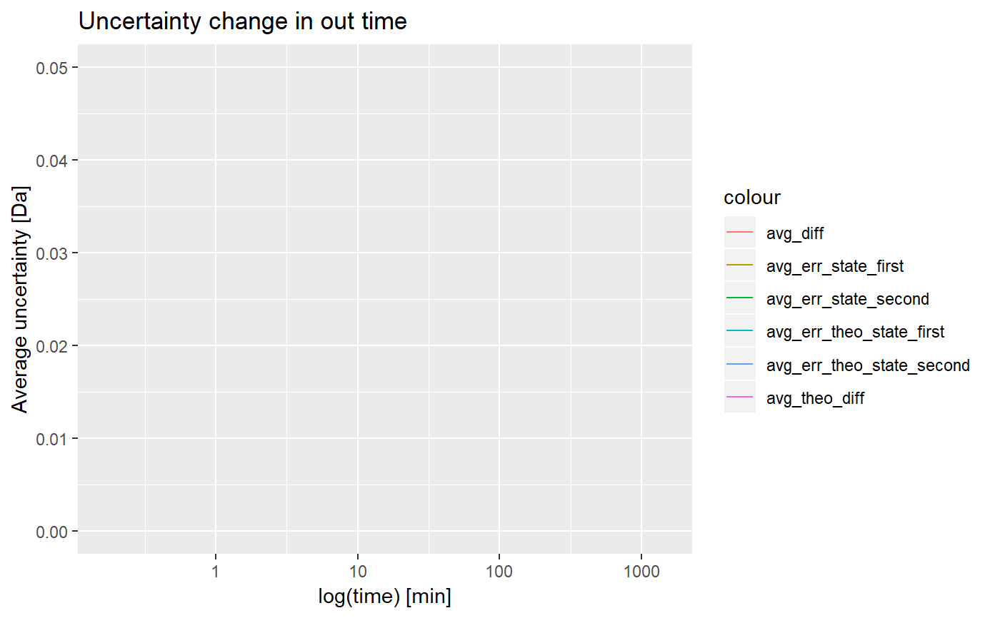

quality_control
quality_control.RdChecks uncertainty level (mean for all peptides in sequence) depending on chosen out value. Visualization for results is provided in examples.
quality_control(dat, state_first, state_second, chosen_time, in_time, relative = TRUE)
Arguments
| dat | file supplied by user using read_hdx() |
|---|---|
| state_first | first state |
| state_second | second state |
| chosen_time | chosen time |
| in_time | in time |
| relative |
|
Value
data.frame with values - time, value, uncertainty
Examples
#> #> #>(result <- quality_control(dat = dat, state_first = "CD160", state_second = "CD160_HVEM", chosen_time = 1, in_time = 0.001, relative = TRUE))#> time avg_err_state_first sd_err_state_first avg_err_state_second #> 1 0.167 0.02726432 0.034505648 0.04002412 #> 2 1.000 0.01809028 0.024756735 0.03441546 #> 3 5.000 0.02047067 0.014970305 0.02662301 #> 4 25.000 0.01457019 0.010830460 0.02364142 #> 5 120.000 0.01487203 0.008620807 0.01947143 #> 6 1440.000 0.01291996 0.007112112 0.01780559 #> sd_err_state_second avg_err_theo_state_first sd_err_theo_state_first #> 1 0.052382299 0.004956604 0.003506281 #> 2 0.046121220 0.004956604 0.003506281 #> 3 0.031301883 0.004956604 0.003506281 #> 4 0.025624532 0.004956604 0.003506281 #> 5 0.013984848 0.004956604 0.003506281 #> 6 0.007831976 0.004956604 0.003506281 #> avg_err_theo_state_second sd_err_theo_state_second avg_diff sd_diff #> 1 0.008696022 0.003880989 0.04910158 0.062186906 #> 2 0.008696022 0.003880989 0.03980257 0.051630286 #> 3 0.008696022 0.003880989 0.03439911 0.033868351 #> 4 0.008696022 0.003880989 0.02836936 0.027193051 #> 5 0.008696022 0.003880989 0.02448255 0.014771291 #> 6 0.008696022 0.003880989 0.02248423 0.009476601 #> avg_theo_diff sd_theo_diff #> 1 0.01036691 0.004459795 #> 2 0.01036691 0.004459795 #> 3 0.01036691 0.004459795 #> 4 0.01036691 0.004459795 #> 5 0.01036691 0.004459795 #> 6 0.01036691 0.004459795library(ggplot2) ggplot(result) + geom_line(aes(x = time, y = avg_err_state_first, color = "avg_err_state_first")) + geom_line(aes(x = time, y = avg_err_state_second, color = "avg_err_state_second")) + geom_line(aes(x = time, y = avg_err_theo_state_first, color = "avg_err_theo_state_first")) + geom_line(aes(x = time, y = avg_err_theo_state_second, color = "avg_err_theo_state_second")) + geom_line(aes(x = time, y = avg_diff, color = "avg_diff")) + scale_x_log10() + ylim(0, 0.05) + geom_line(aes(x = time, y = avg_theo_diff, color = "avg_theo_diff")) + labs(x = "log(time) [min]", y = "Average uncertainty", title = "Uncertainty change in out time")(result <- quality_control(dat = dat, state_first = "CD160", state_second = "CD160_HVEM", chosen_time = 1, in_time = 0.001, relative = FALSE))#> time avg_err_state_first sd_err_state_first avg_err_state_second #> 1 0.167 0.05839928 0.0397346 0.1064781 #> 2 1.000 0.05839928 0.0397346 0.1064781 #> 3 5.000 0.05839928 0.0397346 0.1064781 #> 4 25.000 0.05839928 0.0397346 0.1064781 #> 5 120.000 0.05839928 0.0397346 0.1064781 #> 6 1440.000 0.05839928 0.0397346 0.1064781 #> sd_err_state_second avg_err_theo_state_first sd_err_theo_state_first #> 1 0.05445792 0.05839928 0.0397346 #> 2 0.05445792 0.05839928 0.0397346 #> 3 0.05445792 0.05839928 0.0397346 #> 4 0.05445792 0.05839928 0.0397346 #> 5 0.05445792 0.05839928 0.0397346 #> 6 0.05445792 0.05839928 0.0397346 #> avg_err_theo_state_second sd_err_theo_state_second avg_diff sd_diff #> 1 0.1064781 0.05445792 0.1260377 0.05812599 #> 2 0.1064781 0.05445792 0.1260377 0.05812599 #> 3 0.1064781 0.05445792 0.1260377 0.05812599 #> 4 0.1064781 0.05445792 0.1260377 0.05812599 #> 5 0.1064781 0.05445792 0.1260377 0.05812599 #> 6 0.1064781 0.05445792 0.1260377 0.05812599 #> avg_theo_diff sd_theo_diff #> 1 0.1260377 0.05812599 #> 2 0.1260377 0.05812599 #> 3 0.1260377 0.05812599 #> 4 0.1260377 0.05812599 #> 5 0.1260377 0.05812599 #> 6 0.1260377 0.05812599ggplot(result) + geom_line(aes(x = time, y = avg_err_state_first, color = "avg_err_state_first")) + geom_line(aes(x = time, y = avg_err_state_second, color = "avg_err_state_second")) + geom_line(aes(x = time, y = avg_err_theo_state_first, color = "avg_err_theo_state_first")) + geom_line(aes(x = time, y = avg_err_theo_state_second, color = "avg_err_theo_state_second")) + geom_line(aes(x = time, y = avg_diff, color = "avg_diff")) + geom_line(aes(x = time, y = avg_theo_diff, color = "avg_theo_diff")) + labs(x = "time [min]", y = "Average uncertainty [Da]", title = "Uncertainty change in out time")